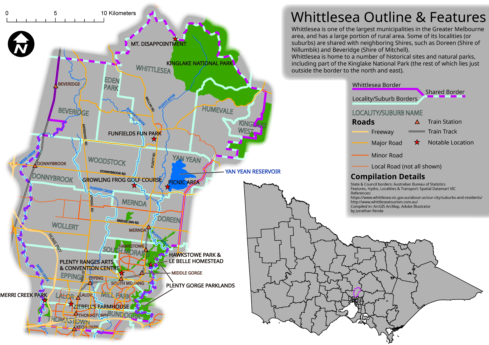

Whittlesea Map

This was my final map submission in the first semester of my second year.
The assignment had very little specification; the topic & content were entirely up to the individual.
I grew up in the Whittlesea suburbs, and at the time had recently moved to Mernda from South Morang,
so I was curious to learn more about Whittlesea as a whole.
The map purpose is somewhat haphazard, but I'm still happy with how it turned out.
It's by no means a perfect design, but getting certain ideas to work like the blurred outer border
and the alternating shared border was a fun challenge. If you zoom in (the map is meant to be viewed at A3 size)
you might notice that all text other than landmarks have a color fill to tie them in with the feature they relate to.
For some reason, the river feature text is outlined rather than filled, and in retrospect I wonder if taking that approach
for the other colored text might have been more effective.
I would love to redo this if I ever find the opportunity. It certainly stuck in my memory
and I learned a lot from it, and that was the main goal in the end.